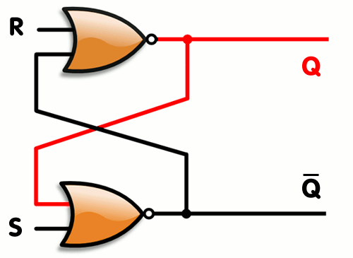
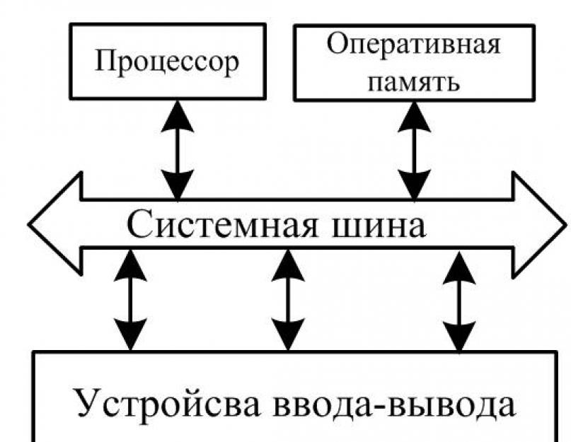
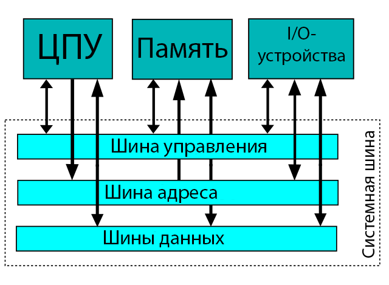
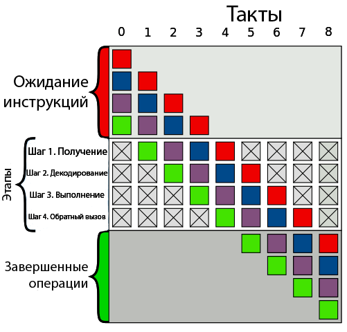

Устройство управления (УУ) помогает процессору контролировать и выполнять инструкции. УУ сообщает компонентам, что именно нужно делать. В соответствии с инструкциями он координирует работу с другими частями компьютера, включая второй основной компонент — арифметико-логическое устройство (АЛУ). Все инструкции вначале поступают именно на устройство управления.
Существует два типа реализации УУ:
УУ на жёсткой логике быстрее, но УУ с микропрограммным управлением обладает более гибкой функциональностью.
Это устройство, как ни странно, выполняет все арифметические и логические операции, например сложение, вычитание, логическое ИЛИ и т. п. АЛУ состоит из логических элементов, которые и выполняют эти операции.
Большинство логических элементов имеют два входа и один выход.
Ниже приведена схема полусумматора, у которой два входа и два выхода. A и B здесь являются входами, S — выходом, C — переносом (в старший разряд).
Как говорилось ранее, процессор выполняет поступающие на него команды. Команды в большинстве случаев работают с данными, которые могут быть промежуточными, входными или выходными. Все эти данные вместе с инструкциями сохраняются в регистрах и памяти.
Регистр — минимальная ячейка памяти данных. Регистры состоят из триггеров (англ. latches/flip-flops). Триггеры, в свою очередь, состоят из логических элементов и могут хранить в себе 1 бит информации.
Триггеры могут быть синхронные и асинхронные. Асинхронные могут менять своё состояние в любой момент, а синхронные только во время положительного/отрицательного перепада на входе синхронизации.
По функциональному назначению триггеры делятся на несколько групп:
Для хранения промежуточных данных ОЗУ не подходит, т. к. это замедлит работу процессора. Промежуточные данные отсылаются в регистры по шине. В них могут храниться команды, выходные данные и даже адреса ячеек памяти.

ОЗУ (оперативное запоминающее устройство, англ. RAM) — это большая группа этих самых регистров, соединённых вместе. Память у такого хранилища непостоянная и данные оттуда пропадают при отключении питания. ОЗУ принимает адрес ячейки памяти, в которую нужно поместить данные, сами данные и флаг записи/чтения, который приводит в действие триггеры.

Команды — это фактические действия, которые компьютер должен выполнять. Они бывают нескольких типов:
На самом деле все арифметические операции в АЛУ могут быть созданы на основе всего двух: сложение и сдвиг. Однако чем больше базовых операций поддерживает АЛУ, тем оно быстрее.
Инструкции предоставляются компьютеру на языке ассемблера или генерируются компилятором высокоуровневых языков.
В процессоре инструкции реализуются на аппаратном уровне. За один такт одноядерный процессор может выполнить одну элементарную (базовую) инструкцию.
Группу инструкций принято называть набором команд (англ. instruction set).
Быстродействие компьютера определяется тактовой частотой его процессора. Тактовая частота — количество тактов (соответственно и исполняемых команд) за секунду.
Частота нынешних процессоров измеряется в ГГц (Гигагерцы). 1 ГГц = 10⁹ Гц — миллиард операций в секунду.
Чтобы уменьшить время выполнения программы, нужно либо оптимизировать (уменьшить) её, либо увеличить тактовую частоту. У части процессоров есть возможность увеличить частоту (разогнать процессор), однако такие действия физически влияют на процессор и нередко вызывают перегрев и выход из строя.
Инструкции хранятся в ОЗУ в последовательном порядке. Для гипотетического процессора инструкция состоит из кода операции и адреса памяти/регистра. Внутри управляющего устройства есть два регистра инструкций, в которые загружается код команды и адрес текущей исполняемой команды. Ещё в процессоре есть дополнительные регистры, которые хранят в себе последние 4 бита выполненных инструкций.
Ниже рассмотрен пример набора команд, который суммирует два числа:
Все данные между процессором, регистрами, памятью и I/O-устройствами (устройствами ввода-вывода) передаются по шинам. Чтобы загрузить в память только что обработанные данные, процессор помещает адрес в шину адреса и данные в шину данных. Потом нужно дать разрешение на запись на шине управления.

У процессора есть механизм сохранения инструкций в кэш. Как мы выяснили ранее, за секунду процессор может выполнить миллиарды инструкций. Поэтому если бы каждая инструкция хранилась в ОЗУ, то её изъятие оттуда занимало бы больше времени, чем её обработка. Поэтому для ускорения работы процессор хранит часть инструкций и данных в кэше.
Если данные в кэше и памяти не совпадают, то они помечаются грязными битами (англ. dirty bit).
Современные процессоры могут параллельно обрабатывать несколько команд. Пока одна инструкция находится в стадии декодирования, процессор может успеть получить другую инструкцию.

Однако такое решение подходит только для тех инструкций, которые не зависят друг от друга.
Если процессор многоядерный, это означает, что фактически в нём находятся несколько отдельных процессоров с некоторыми общими ресурсами, например кэшем.